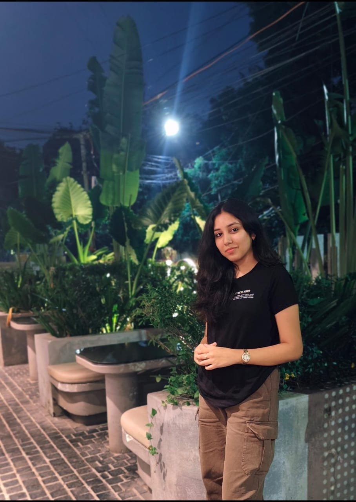
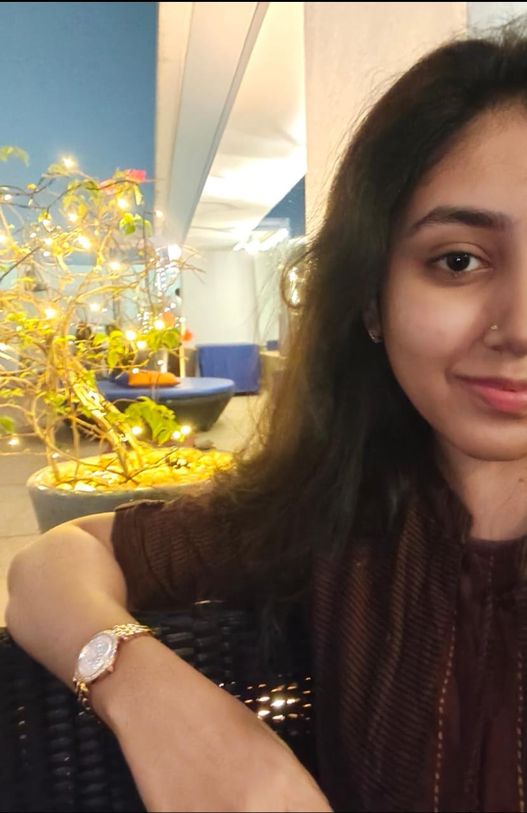

Software Developer | Creative Coder | AI Enthusiast

I am a third-year BTech Computer Science student with deep interest in Software Development, Artificial Intelligence, and Cybersecurity. I enjoy solving real-world problems through code and love blending security with development in unique projects. I am currently exploring advanced AI techniques and backend systems, while building full-scale applications that are user-friendly and secure.

Smart Academic Planner & Performance Tracker
A C++ tool to help students manage subject-wise marks, grades, and goals. Built using object-oriented programming and file handling.
🔗 View on GitHub
I am currently working on a real-world research project to build a phishing detection system with over 99% accuracy. This project uses advanced techniques like BERT, Flask, and NLP to detect phishing content from emails and URLs. It combines my interest in AI and Cybersecurity, demonstrating how smart systems can protect users in the digital age.
B.Tech – Computer Science
GPA: 7.00 (2023–2027)
Good Shepherd Convent
12th – 80% (2022–2023)
Email: aafrenzehrastar@gmail.com | Location: Chennai